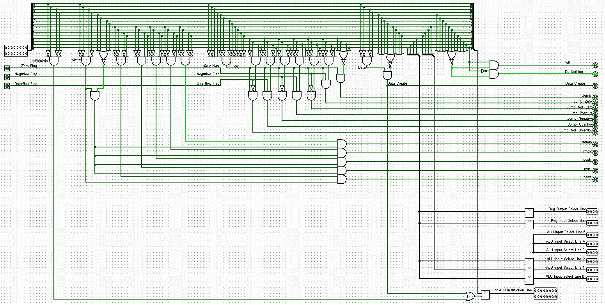

Computer Design
Custom computer architectures with their own custom ISAs built from gate-logic.
Why I built this
Computer 1 (September 2025 – December 2025)
In grade 12 I had taught myself Boolean algebra from articles and videos online, learning how to build half and full adders, and understanding the basic components of a computer, ALU, memory, instruction decoder. I knew my university classes would eventually cover computer architecture formally, but I didn't want to learn it that way first (I was in 1A at the time). I wanted to explore the problem myself, without any influence from modern design conventions. That drive led me to build my first computer: an 8-bit machine with 4-bit values (not overly impressive in scale) running a custom, Turing-complete ISA.
Computer 2 (January 2026 – April 2026)
I took another attempt at making a computer in my 1B term and took the lessons I learnt from my first computer to design a more capable 16-bit computer with a more diverse ISA and sturdier architecture.
How I built it
Computer 1

The computer has 4 registers, ALU, instruction decoder, and 2 memory blocks where the top block (labeled IN in the top left) is for 8-bit instructions and the bottom block is for 4-bit data (labeled D in the top left). The image below is the ISA.
- 8-bit ISA
- 4-bit Data
- 4 registers
- Turing Complete

The letters indicate registers so ab could be 00 to 11 and the same for cd. Because I have a lot of images of this circuit, all the logic blocks are shown below.
Computer 2

My second attempt at making a computer in 1B was a lot larger. It was a 16-bit computer with 16 registers, 1 memory block for both data and instructions, an ALU with more operations than my first computer, and a custom 16-bit ISA (shown below, the first image are the instructions and the second image is what each instruction does). Like my first computer the letters indicate the registers so abcd can be 0000 to 1111 and likewise for efgh. What made this ISA unique to the first is that I had some instructions use multiple 16-bit words. For example "cret reg# val" would be two lines of assembly, the first would be the instruction line with the corresponding register (ex. 0001 0000 0000 abcd) and the second would be a 16-bit word of data. I also added features to expand the computer with a separate stack block of memory, but I have yet to implement it.
- 16-bit ISA
- 16-bit Data
- 16 registers
- More complex ISA


Some more designs for computer 2 can be seen below.
What I learned
There are a few major takeaways from these projects. The first is that I should have used a hardware description language to implement this stuff. It was good experience to have to design all the blocks myself, but it became too much after a while, especially with the 16-bit computer. I am now designing my computers in Verilog. Another takeaway is that I should pipeline my data. I didn't know that data pipelining was even a thing when I started both these projects; I learnt about it later in one of my courses. If I were to implement these computers again, I would not be able to run my clock nearly as fast without pipelining. I also would in the future use a standard ISA like RISC-V, as there are already compilers out there for it and it is well understood how to compile C or C++ down to RISC-V.
Computer 1 Architecture


Computer 2 Architecture


